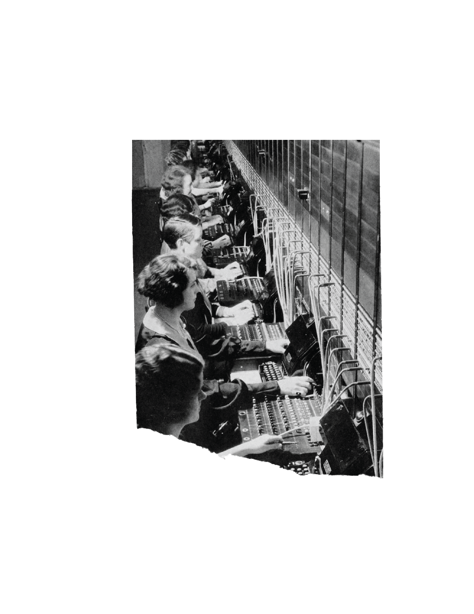
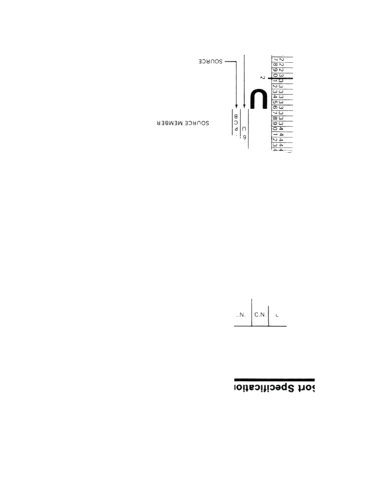
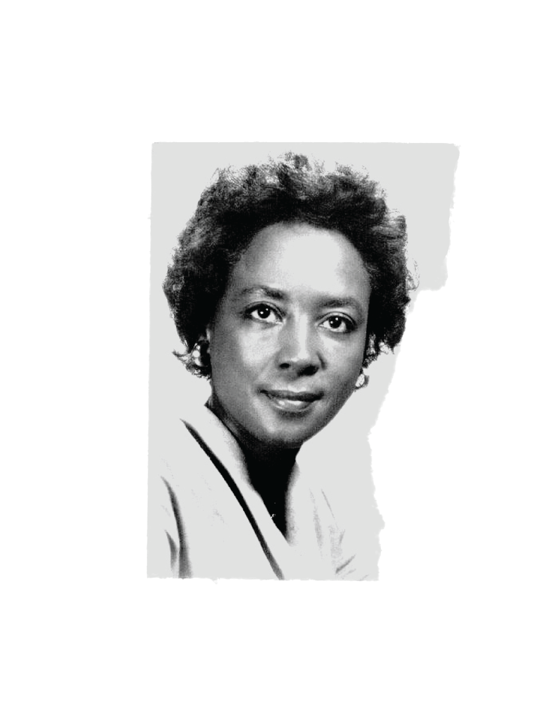
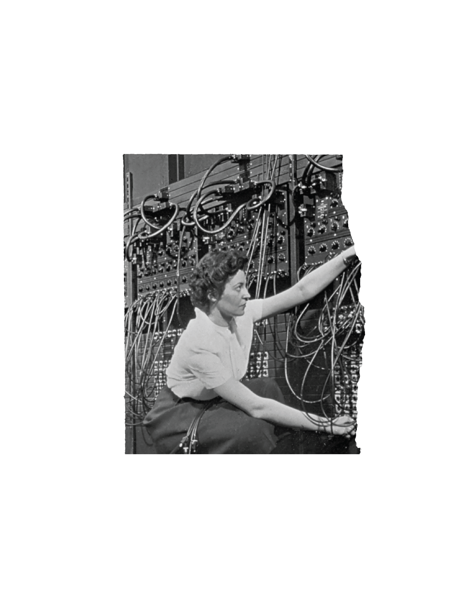
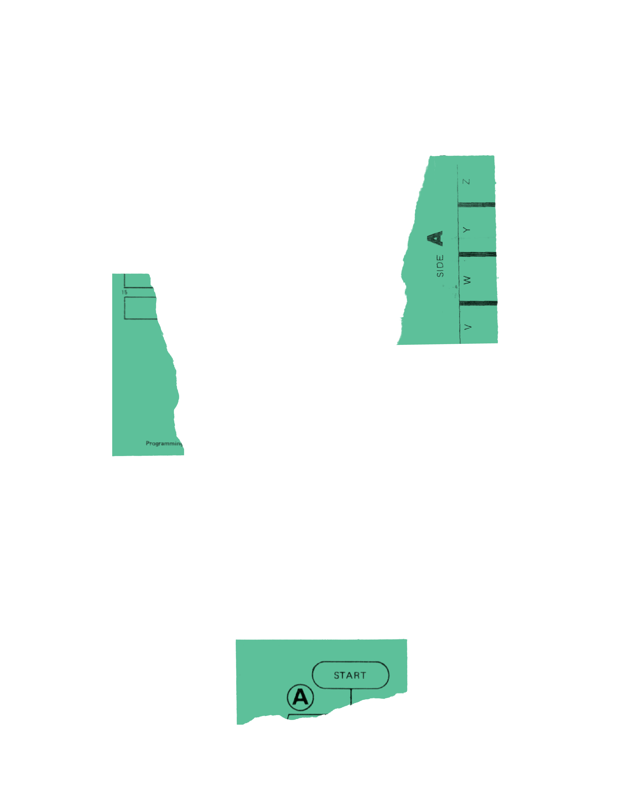

A History
of Women
in Coding
Begin



1800–1950
In 1833, a mathematician by the name of Ada Lovelace developed an algorithm for a machine to process and store commands. In doing so, she became the first coder in history. When digital computing became a reality in the 1940s, it was women who continued to be its pioneers. At the time, coding was a painstaking and precise job, men preferred to develop the computer hardware. Due to this meticulous nature, coding was considered to be a secondary, even secretarial task. Female coders were expected to understand both the application and the machine and, therefore, learned to diagnose troubles as well as, if not better than, the engineer. In spite of their influence, women at the time often received no credit for their work.
1950–1960
In the 1950s and 60s, the number of coding jobs increased drastically as companies adopted computers to process tasks such as payroll and data analysis. The novelty of the field meant that men had no advantage over women in hiring. Instead, hiring was based on aptitude, with employers using tests to judge the ability of applicants. In fact, women’s association with tasks such as weaving and knitting was often seen as a benefit as, like coding, they required extreme logic and precision. Coding, therefore, became one of the few professional jobs to consistently provide opportunities
for women.

1970
While women’s participation in coding continued to rise throughout 1960s, by the late 1970s, female enrollment in university-level computer science programs dropped by nearly half. This shift coincided with the advent of the personal computer, in which computers were adopted into the home for the first time. Boys, who were more likely to be gifted a computer and encouraged to use it, had more access to coding than girls at a early age. This schism was soon reflected in the classroom, with men beginning entry-level courses with more knowledge than their female classmates. This led women to drop out higher rates than men, despite the fact that those who remained in the program often caught up to their male counterparts by their second year.
1970
While women’s participation in coding continued to rise throughout 1960s, by the late 1970s, female enrollment in university-level computer science programs dropped by nearly half. This shift coincided with the advent of the personal computer, in which computers were adopted into the home for the first time. Boys, who were more likely to be gifted a computer and encouraged to use it, had more access to coding than girls at a early age. This schism was soon reflected in the classroom, with men beginning entry-level courses with more knowledge than their female classmates. This led women to drop out higher rates than men, despite the fact that those who remained in the program often caught up to their male counterparts by their second year.


<
1970
While women’s participation in coding continued to rise throughout 1960s, by the late 1970s, female enrollment in university-level computer science programs dropped by nearly half. This shift coincided with the advent of the personal computer, in which computers were adopted into the home for the first time. Boys, who were more likely to be gifted a computer and encouraged to use it, had more access to coding than girls at a early age. This schism was soon reflected in the classroom, with men beginning entry-level courses with more knowledge than their female classmates. This led women to drop out higher rates than men, despite the fact that those who remained in the program often caught up to their male counterparts by their second year.
1970
While women’s participation in coding continued to rise throughout 1960s, by the late 1970s, female enrollment in university-level computer science programs dropped by nearly half. This shift coincided with the advent of the personal computer, in which computers were adopted into the home for the first time. Boys, who were more likely to be gifted a computer and encouraged to use it, had more access to coding than girls at a early age. This schism was soon reflected in the classroom, with men beginning entry-level courses with more knowledge than their female classmates. This led women to drop out higher rates than men, despite the fact that those who remained in the program often caught up to their male counterparts by their second year.